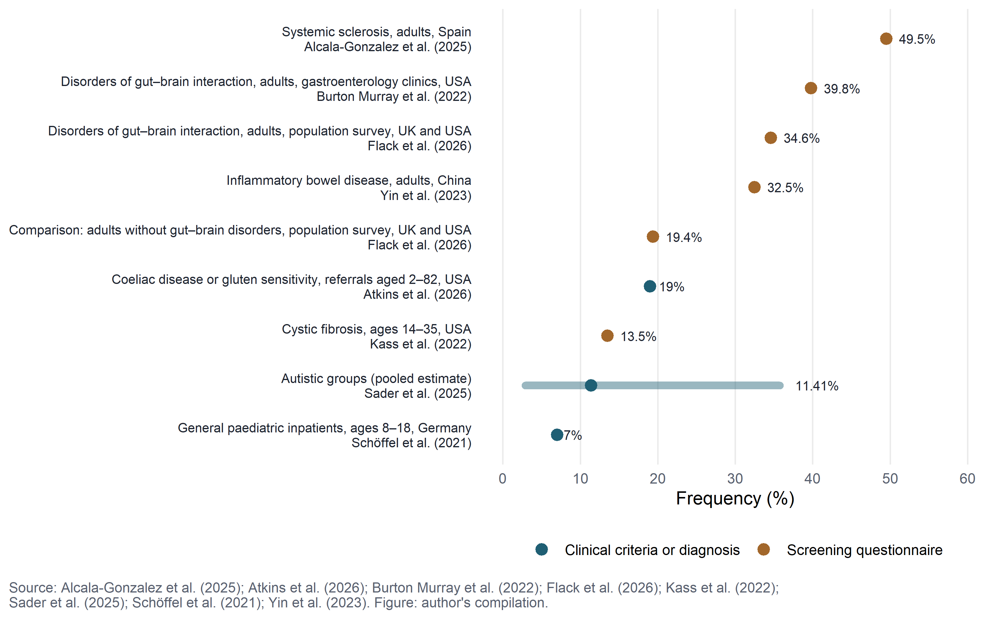

2 A family of difficulties: related disorders, ages and groups
TipIn plain words
ARFID belongs to a wider family of feeding and eating disorders. It can look like “picky eating”, like anorexia or like a medical problem, and sometimes it overlaps with all three. It also comes in different forms: some young people find many foods unbearable to eat, some rarely feel hungry, and some are afraid of what eating might do to them. Some groups are more likely to develop it: autistic young people, those with anxiety, and those with digestive or immune conditions. Knowing these patterns helps adults judge when ordinary fussiness has become something that needs a professional’s attention.
Chapter 1 showed that how often ARFID is found depends on how it is looked for. This chapter turns from how many to what and who: what kind of difficulty ARFID is, how it differs from its neighbours, and which young people are most likely to develop it. These questions are not merely taxonomic. Every argument about environmental causes in the chapters that follow presupposes that we know which presentation, in which group, at which age we are talking about. A mealtime practice, a medical condition or a stream of online content that matters for a frightened adolescent may be irrelevant to a child with lifelong sensory aversions.
The chapter proceeds in five steps. Section 2.1 situates ARFID within the family of feeding and eating disorders recognised by current classifications. Section 2.2 examines its three presentations and the evidence that they combine. Section 2.3 maps the borders with its look-alikes: picky eating, paediatric feeding disorder, anorexia nervosa, orthorexic eating and restriction secondary to medical illness. Section 2.4 identifies the groups in which ARFID is concentrated, and Section 2.5 follows the disorder across childhood, adolescence and adulthood.
2.1 The feeding and eating disorders family
One grouping, two traditions
Both major classifications now place feeding disorders, historically the province of paediatrics, and eating disorders, historically that of adolescent and adult psychiatry, in a single grouping (American Psychiatric Association, 2022; World Health Organization, 2025). Table 2.1 summarises its members. The grouping is pragmatic rather than theoretical: what its members share is a disturbance of eating that harms health or functioning, not a common cause.
| Disorder | Core feature (paraphrased) | Role of weight and shape concern | ICD-11 |
|---|---|---|---|
| Anorexia nervosa | Restriction leading to significantly low body weight, with intense fear of weight gain or behaviour that prevents it | Central (or behaviourally expressed) | 6B80 |
| Bulimia nervosa | Recurrent binge eating with compensatory behaviours such as purging | Central | 6B81 |
| Binge-eating disorder | Recurrent binge eating with distress, without regular compensation | Not required | 6B82 |
| Avoidant/restrictive food intake disorder | Restriction of amount or variety of food with nutritional, medical or psychosocial consequences | Excluded as the driver | 6B83 |
| Pica | Persistent eating of non-nutritive or non-food substances | Not relevant | 6B84 |
| Rumination(-regurgitation) disorder | Repeated regurgitation of food without an organic explanation | Not relevant | 6B85 |
| Other specified / unspecified | Clinically significant presentations not meeting full criteria (e.g. atypical anorexia nervosa) | Variable | 6B8Y / 6B8Z |
A useful way to read the table is through Wittgenstein’s notion of family resemblance: members related by a network of overlapping similarities rather than by one feature that all of them share. Anorexia nervosa and ARFID share restriction, low weight and medical risk; ARFID and binge-eating disorder share the absence of a required body-image criterion; anorexia nervosa and bulimia nervosa share the overvaluation of weight and shape. No single feature, and certainly not body image, defines the family.
The residual categories are large
A recurring finding in population studies is that the “other” and “unspecified” categories are larger than the named disorders. In the Australian household surveys discussed in Section 1.2.3, the three-month prevalence of other specified feeding or eating disorders was 3.2% and that of unspecified disorders 10.4%, against 0.3% for ARFID and 0.4–0.5% for broadly defined anorexia nervosa (Hay et al., 2017). In a German sample of 82 patients aged 0–17 seeking treatment for restrictive eating, the move from ICD-10 to ICD-11 significantly reduced the number of residual diagnoses, as patients crossed over to full-threshold anorexia nervosa or ARFID. Those reclassified as ARFID were younger, had an earlier onset and more restrictive eating behaviours, and tended to have more somatic comorbidity than those reclassified as anorexia nervosa (Düplois et al., 2023).
The point matters for a book about early recognition. Before ARFID existed as a category, many of the young people now diagnosed with it were held in residual categories that carried little clinical guidance and attracted little research. Part of what ARFID has done is to give a name, and therefore a research agenda, to a group that was always there.
2.2 Three presentations, many combinations
Three dials rather than three boxes
The diagnostic criteria name three drivers of restriction (sensory-based avoidance, lack of interest in eating or food, and fear of aversive consequences), and early work proposed that each reflects a distinct neurobiological system: sensory perception, homeostatic appetite and the negative-valence (threat) systems respectively (Thomas et al., 2017). The same authors argued for a dimensional rather than categorical reading: each young person sits somewhere on each of the three dimensions. The image is of three dials, each of which can be turned up or down, rather than three boxes into which patients must be sorted. Table 2.2 summarises what is known about each dimension.
| Presentation | What drives restriction | Typical onset and course | Weight and medical profile | Frequently associated features |
|---|---|---|---|---|
| Sensory-based avoidance | Taste, smell, texture, colour or appearance of food; rigid rules (specific brands, foods that must not touch) | Often long-standing, from early childhood; more persistent (Kambanis et al., 2025) | Occurs across the weight spectrum; narrow variety can affect nutrition (Burton-Murray et al., 2024) | More often co-occurs with autism (Sanchez-Cerezo, Neale, Julius, Croudace, et al., 2024) |
| Lack of interest in eating or food | Low appetite, early fullness, little pleasure or interest in eating | Long-standing; more persistent (Kambanis et al., 2025) | Underweight, failure to gain weight, faltering growth (Katzman et al., 2022) | Combines frequently with sensory avoidance |
| Fear of aversive consequences | Fear of choking, vomiting, pain or allergic reaction, often after a specific episode | Often acute onset; more likely to remit by two years (Kambanis et al., 2025) | Underweight, recent weight loss (Sanchez-Cerezo, Neale, Julius, Croudace, et al., 2024) | Anxiety in most cases; girls over-represented (Sanchez-Cerezo, Neale, Julius, Croudace, et al., 2024) |
What the data show
Three lines of evidence support the dimensional view. The first comes from latent class analyses of national surveillance samples, introduced in Section 1.1.2. In the United Kingdom and the Republic of Ireland, an analysis based on six indicators of ARFID psychopathology (lack of appetite, lack of interest, difficulties with the practicalities of eating, sensory sensitivity, rigid eating and fear of aversive consequences) found that the most common class, at 38.2% of 319 children and adolescents, was a mixed presentation combining sensory sensitivity and lack of interest. The remaining cases divided between a sensory class, a lack-of-appetite class and, least commonly at 7.2%, a fear class (Sanchez-Cerezo, Neale, Julius, Croudace, et al., 2024). The classes differed in revealing ways. Membership of the mixed class was associated with younger age, male sex, distress around eating and an autism diagnosis. The fear class was distinctive: almost 80% were girls, most were underweight with an acute onset, and more than 80% had co-occurring anxiety. The authors suggest that, within an otherwise dimensional disorder, fear-driven ARFID may be a relatively separate group. The Canadian analysis had earlier identified acute medical, lack of appetite and sensory classes, with a further 14.5% of cases sitting between the first two (Katzman et al., 2022; Sanchez-Cerezo, Neale, Julius, Croudace, et al., 2024).
The second line of evidence comes from community and clinical samples that measure the three dimensions directly. Among adults with disorders of gut–brain interaction, positive screens were driven by lack of interest in 21.5% of the sample, by sensory avoidance in 18.1% and by fear of aversive consequences in 9.9% (Flack et al., 2026), and a French study of parent reports identified five profiles, three of them combinations (Rubio & Rigal, 2026).
The third line of evidence is prognostic, and arguably the most important. In a prospective study of 100 young people aged 9–23 followed for two years with the PARDI interview, half still met criteria at the end of the follow-up. Greater severity on the sensory and lack-of-interest dimensions predicted persistence at one year, whereas greater severity on the fear dimension predicted remission at two years (Kambanis et al., 2025). If the dimensions predict course, they are not merely descriptive conveniences. They are also likely to matter for environmental questions: an acute, fear-driven presentation triggered by a frightening episode is a plausible candidate for environmental influences, digital ones included (Chapter 4), in a way that a lifelong sensory profile may not be.
2.3 Boundaries and look-alikes
ARFID’s criteria are written partly in the negative: not explained by lack of food, by culture, by another eating disorder or by a medical condition. In practice, each of these exclusions marks a border that clinicians, teachers and parents must cross with care. Table 2.3 summarises the main look-alikes.
| Condition | What drives restriction | Weight or shape concern | Distinguishing questions |
|---|---|---|---|
| Picky eating and food neophobia | Reluctance to try new foods; preferences | Absent | Is growth, nutrition or daily life affected? Most children outgrow it (Pjetraj et al., 2025) |
| Paediatric feeding disorder | Impaired, age-inappropriate oral intake with medical, nutritional, feeding-skill or psychosocial dysfunction | Absent | Is there a feeding-skill or medical component that calls for a multidisciplinary feeding team? (Goday et al., 2019) |
| ARFID | Sensory aversion, lack of interest, fear of consequences | Not the driver | Which dimension(s)? What consequences? |
| Anorexia nervosa, including atypical | Restriction in pursuit of a low weight, or to avoid weight gain | Present, or expressed in behaviour | Is restriction motivated by weight or shape? Has the motivation changed over time? (Breithaupt et al., 2022) |
| Orthorexic eating (no consensus diagnosis) | Preoccupation with “healthy” or “pure” eating | Not required | Is restriction driven by rules about food quality? (Donini et al., 2022) |
| Restriction secondary to a medical condition | Symptoms, prescribed diets or learned avoidance of symptoms | Absent | Does restriction exceed what the condition requires? (Alcala-Gonzalez et al., 2025) |
Picky eating, neophobia and paediatric feeding disorder
Picky eating is common: estimates range from 13% to 50% of children, with a peak between the ages of two and six, and most children outgrow it without harm. A minority, however, remain at risk of long-term nutritional compromise and psychosocial difficulty, and the factors that contribute to it (genetic predisposition, sensory sensitivity, temperament, family feeding practices and adverse feeding experiences) overlap substantially with those implicated in ARFID (Pjetraj et al., 2025). A systematic review of food neophobia, the reluctance to try new foods, identified parental pressure to eat, low encouragement at mealtimes, sensory aspects of food and childhood anxiety among associated factors (Torres et al., 2020).
The boundary between ordinary restriction and disorder is consequence, and a German study of general paediatric inpatients shows how much depends on drawing it carefully. Of 111 patients aged 8–18 in hospital for physical illnesses, 68% reported at least one restrictive eating behaviour. Only 7%, however, showed symptoms of ARFID once medical records were combined with self-report, particularly those who were underweight (Schöffel et al., 2021). Restriction is common; restriction with consequences is not.
A further neighbour is paediatric feeding disorder, a term proposed by a multidisciplinary consensus to describe impaired oral intake that is not appropriate for age and is associated with medical, nutritional, feeding-skill or psychosocial dysfunction (Goday et al., 2019). The two concepts grew largely out of different professional traditions (paediatric gastroenterology and feeding therapy on one side, psychiatry on the other), and they overlap in young children. For this book, the practical lesson is that a child whose restriction involves difficulties with chewing or swallowing, or a medical component, may need a feeding team as much as a mental-health service.
Anorexia nervosa and the motivational boundary
The defining contrast between ARFID and anorexia nervosa is motivational, and longitudinal studies support it. In an 18-month study of 82 young women aged 10–23 with low-weight eating disorders, ARFID was the most stable diagnosis (a probability of 0.84 of remaining in the same category), and no patient with another diagnosis crossed over into ARFID (Breithaupt et al., 2022). In the two-year study discussed above, 3% of young people with ARFID developed anorexia nervosa (Kambanis et al., 2025); in an earlier Canadian clinical series, four of 34 were reclassified as their symptoms evolved (Norris et al., 2014). Crossover from ARFID to anorexia nervosa is therefore uncommon but real, and it is one reason why a first assessment should not be treated as final.
The psychopathological profiles differ as well. In the Spanish clinical sample from Sant Joan de Déu, young people with ARFID showed more clinical fears and attention problems, while those with anorexia nervosa reported more internalising symptoms such as anxiety and depression on self-report questionnaires (Cañas et al., 2021). Yet the boundary remains porous at the level of individual experience: a child with ARFID can absorb appearance ideals from the culture around her without those ideals driving her restriction (Barney et al., 2022). Measures that separate the two families of motivation are necessary for exactly this reason (Çelik et al., 2026).
Orthorexic eating
Orthorexia nervosa, a pathological preoccupation with eating “correctly”, is not a recognised diagnosis. A Delphi consensus of 47 experts from 14 countries proposed provisional criteria, while acknowledging that empirical evidence is limited (Donini et al., 2022). A Japanese case illustrates why the concept matters for this book. A 13-year-old girl presented with rapid weight loss; she did not fear weight gain, which argued against anorexia nervosa, and she did not avoid foods for sensory or fear-based reasons, which argued against ARFID. Her restriction was driven instead by rules about nutrition that she had taken from magazines and social media promoting a diet based almost exclusively on vegetables (Yoshimura et al., 2023). A single case proves nothing about prevalence, but it marks a boundary at which digital information environments plausibly enter the clinical picture (Section 4.3).
Restriction in the context of medical illness
The fourth criterion requires that restriction exceed what a concurrent medical condition would ordinarily produce. This is a judgement, not a measurement. The investigators of the Spanish systemic sclerosis study, in which half of patients screened positive, concluded that future research must identify when a positive screen reflects an adaptive response to disease and when it reflects pathological restriction warranting behavioural treatment (Alcala-Gonzalez et al., 2025). The same question arises in every gastrointestinal and immune-mediated condition discussed in Section 2.4.
2.4 Groups at elevated risk
ARFID is not evenly distributed. It concentrates in identifiable groups, and those groups are where early recognition is most efficient: as Section 1.4 showed, a screen has a higher positive predictive value where prior probability is higher. Figure 2.1 brings together estimates from clinical populations; they use different measures and should be compared with caution.
Neurodevelopmental conditions
The strongest and best-documented association is with autism. A meta-analysis of 21 studies and 7,442 participants estimated that 16.27% of people with ARFID have an autism diagnosis (95% CI 8.64–28.53%) and that 11.41% of autistic groups meet criteria or thresholds for ARFID (95% CI 2.89–35.76%), with gender and ethnicity as significant sources of heterogeneity (Sader et al., 2025). In a large autism cohort, avoidant-restrictive features were reported in 21% of participants and in 17% of their parents, and sensory sensitivities, food preferences and mealtime routines often persist into adolescence and adulthood (Keski-Rahkonen & Ruusunen, 2023). Demand for help is high: in a survey of 419 community feeding practitioners in the United States, 97% reported seeing autistic children with feeding problems, food selectivity was the most common presenting problem, and those who did not offer treatment most often cited insufficient training (Burrell et al., 2025).
Population data broaden the picture. In a Swedish cohort of 30,795 children, the 600 with an ARFID phenotype had elevated symptoms on every one of the neurodevelopmental and psychiatric conditions measured. The most prevalent were separation anxiety (29.0%), oppositional defiant disorder (19.4%), attention-deficit/hyperactivity disorder (ADHD, 16.9%), panic disorder (15.3%) and tic disorders (14.8%); the largest increases in odds were for autism (odds ratio 13.7) and ADHD (9.4), with no sex-specific differences (Nyholmer et al., 2025). ADHD raises a specific clinical dilemma, because stimulant medication commonly suppresses appetite. A case series of ten young people treated for both conditions found that stimulants could be continued, with dose optimisation and structured mealtimes, while weight was restored (Finn et al., 2023), an encouraging but small-scale observation.
Anxiety and obsessive–compulsive symptoms
Anxiety is the most frequent psychiatric companion of ARFID in children and adolescents, with estimates ranging from 9.1% to 72% across studies (Sanchez-Cerezo et al., 2023); in the British surveillance data, more than 80% of the fear class had co-occurring anxiety (Sanchez-Cerezo, Neale, Julius, Croudace, et al., 2024). The relationship with obsessive–compulsive disorder is partial: a systematic review found overlapping and distinct features, lower obsessive–compulsive comorbidity in childhood and adolescence than in adulthood, and an association in younger people between obsessive–compulsive disorder and the fear-driven profile. Obsessive–compulsive symptoms may respond poorly to conventional eating-disorder treatment (Di Luzio et al., 2026).
Gastrointestinal, immune and other medical conditions
The third major risk group comprises young people and adults with gastrointestinal, immune-mediated and other chronic conditions. Among adults attending gastroenterology clinics for disorders of gut–brain interaction, 39.8% reported ARFID symptoms, three times the proportion with clinically significant weight- or shape-motivated eating-disorder symptoms (Burton Murray et al., 2022). Similar patterns appear in population data (Flack et al., 2026), in coeliac disease and non-coeliac gluten sensitivity, where ARFID symptoms were found in 19% of patients at consultation and were associated with a history of weight loss (Atkins et al., 2026), in inflammatory bowel disease, where positive screens were associated with lower food literacy (Yin et al., 2023), and in cystic fibrosis (Kass et al., 2022). The association runs in both directions: youth with ARFID were more than ten times as likely as healthy controls to report gastrointestinal conditions and twice as likely to report immune-mediated conditions, which the authors interpret as suggesting bidirectional risk and maintenance factors (Burton-Murray et al., 2024).
For early recognition, these findings have a double edge. They identify clinics where screening is likely to be productive. But they also place the hardest judgement of all, whether restriction is adaptive or disordered (Section 2.3.4), in exactly the settings where the risk is highest.
Families
ARFID is lived in families. Parents of children with sensory sensitivities and picky eating describe a daily battle for control of the sensory environment, the stigma and disapproval of others, and a gradual movement towards acceptance that made positive interactions around food possible (Cunliffe et al., 2022). Among adolescents in treatment, family functioning was impaired and comparable to that of adolescents with restricting anorexia nervosa, although it was not associated with the severity of ARFID symptoms (Rienecke et al., 2026). Neither study can tell us whether family strain is a cause or a consequence; both tell us that families are part of the clinical picture, and part of any early-recognition strategy.
ImportantFor practice
- When picky eating needs attention: when it is accompanied by weight loss, faltering growth, reliance on supplements or drinks in place of meals, or marked interference with school, friendships or family life.
- Where to look first: autistic young people and those with ADHD; young people with anxiety, especially after a frightening episode of choking or vomiting; and those attending gastroenterology, allergy or other chronic-illness clinics.
- What to ask: which driver (sensory, interest, fear, or weight and shape) and what consequences. A worry about weight or shape points towards a broad eating-disorder assessment, not away from help.
2.5 Across the life course
Childhood
Restrictive eating has its first and most common expression in early childhood, when picky eating peaks (Pjetraj et al., 2025). ARFID onset is commonly before puberty (Tanner & Richmond, 2024), and population data place the broad phenotype at about 2% of children aged 6–12 (Dinkler et al., 2023). In clinical series, children with ARFID are younger and have been unwell for longer than those with anorexia nervosa when they first present (Cañas et al., 2021; Fisher et al., 2014). The mixed sensory and lack-of-interest presentation, associated with younger age and autism, is characteristic of this period (Sanchez-Cerezo, Neale, Julius, Croudace, et al., 2024).
Adolescence
Adolescence, the focus of this book and of its toolkit, is the period in which ARFID changes character. A representative survey of 5,072 secondary-school students aged 11–19 in New South Wales found a prevalence of possible ARFID of 1.98% (95% CI 1.63–2.41%), similar to that of anorexia nervosa and binge-eating disorder in the same population and stable across school years. The ratio of boys to girls was 1:1.7, a statistically significant but small difference. Weight status, psychological distress and health-related quality of life did not differ between adolescents with and without possible ARFID, which led the authors to suggest that its impact may be modest in adolescence and become more significant in adulthood (Van Buuren et al., 2023). Clinical samples tell a different story: among Canadian children and adolescents reaching specialist care, older age was associated with eating too little, loss of appetite, medical compromise, anxiety and depression, and hospital admission (Katzman et al., 2021); in British surveillance data, the inability to eat with others and the avoidance of social activities involving food distinguished between presentations (Sanchez-Cerezo, Neale, Julius, Croudace, et al., 2024).
The two pictures are compatible. A community survey captures many adolescents with milder, stable restriction who are getting by; specialist services see those in whom restriction has crossed into medical or social harm. Early recognition is about the passage between the two, and adolescence, when meals move out of the family home and into school canteens, friendships and independent choices, is where that passage is most likely to become visible.
Course is variable. Over two years, half of young people with ARFID in a prospective study persisted with the diagnosis (Kambanis et al., 2025). Over 18 months, ARFID was the most stable of the low-weight eating disorders (Breithaupt et al., 2022). In British surveillance data, clinicians judged that 54.8% of cases had improved at one year (Sanchez-Cerezo, Neale, Julius, Lynn, et al., 2024).
Adulthood
ARFID is not a disorder that young people simply grow out of. In adults, positive screens are common and associated with a substantial health burden (Brownlow et al., 2026), interview-based prevalence is low but associated with poor mental health-related quality of life (Hay et al., 2017), and adults describe living with the disorder as a trade-off between the safety of known foods and the freedom of ordinary social life (Ruiz Fischer & Starr, 2024). Among autistic people in particular, sensory and routine-based difficulties often continue into adulthood (Keski-Rahkonen & Ruusunen, 2023).
2.6 Implications for the rest of the book
Three conclusions carry forward. First, ARFID is dimensional, and its dimensions predict course; analyses of environmental influence in Chapter 3 and Chapter 4 must therefore ask which dimension is affected, not only whether ARFID is. Second, risk is concentrated in identifiable groups (neurodevelopmental, anxious, and medically ill young people), which is where targeted recognition is most efficient and where the toolkit’s risk-context modules (Section 5.5) are directed. Third, the borders with picky eating, paediatric feeding disorder, anorexia nervosa, orthorexic eating and medical illness are crossed by judgement, not by measurement. A responsible tool can help adults describe what they see along each of these borders; it cannot, and should not, decide on which side a young person stands.
NoteKey points
- Feeding and eating disorders form a single grouping held together by family resemblance, not by a shared cause; body image defines some members and is explicitly excluded from ARFID.
- ARFID’s three presentations (sensory, lack of interest, fear) behave like dimensions: mixed presentations are the most common in children, and the dimensions predict course, with fear-driven ARFID more acute and more likely to remit.
- Restriction is common; restriction with nutritional, medical or psychosocial consequences is not. Consequences mark the border with picky eating.
- Crossover from ARFID to anorexia nervosa is uncommon but real; motivations should be reassessed over time.
- Risk concentrates in autistic young people and those with ADHD, in anxious young people, and in those with gastrointestinal, immune and other chronic conditions.